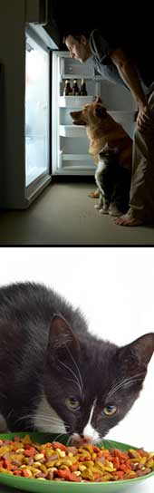

ISTOCKPHOTO
Given the ongoing developments with pet food recalls, many pet owners are looking for better alternatives to feed their pets. Experts recommend avoiding any pet food that lists wheat gluten or 'byproducts' as an ingredient.